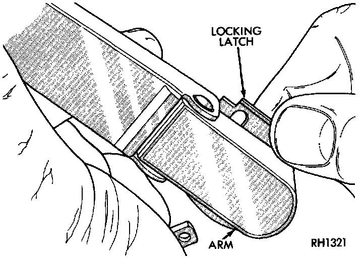
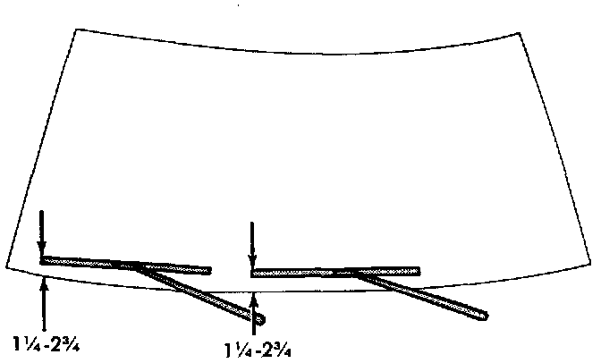

Wiper Arm
CAUTION: The use of a screwdriver or other prying tool to remove a wiper arm may distort it. This distortion could allow the arm to come off of the pivot shaft, regardless of how carefully it is installed.1. Open the hood of the vehicle.
Wiper Arm Remove/Install:

2. Lift the wiper arm to permit the latch to be pulled out to its holding position, then release the arm. The arm will remain off the windshield with the latch in this position.
3. Remove the arm from the pivot using a rocking motion.
Front Wiper Arm Installation:

4. Install the arm and blade with the wiper motor in the Park position. See the Wiper Arm Installation illustration. Mount the arms on the pivot shafts so that the distance from the lower edge of the wiper arm tip to the upper edge of the lower windshield moulding is:
-25 to 52 mm (0.98 to 2.04 inch) on the driver side
-33 to 62 mm (1.29 to 2.44 inch) on the passenger side.
5. Lift the wiper arm away from the windshield slightly to relieve the spring tension on the locking latch. Push the latch into the locked position and slowly release the arm until the wiper blade rests on the windshield.
6. Operate the wipers with the windshield glass wet, then turn the wiper switch to the Off position. Check for the correct wiper arm positioning and readjust if required.